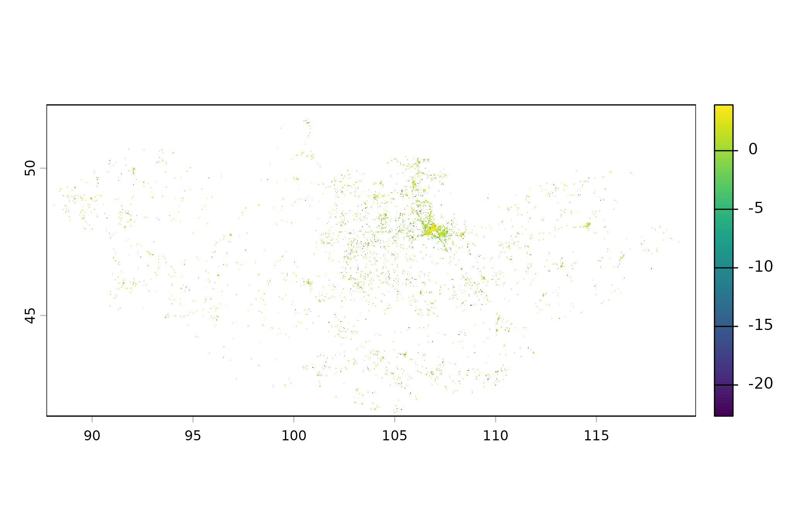

Estimated population per grid cell from WorldPop (2015 to 2030, constrained
to built-up areas), at 1 km or 100 m. The national file for the year is
downloaded once from WorldPop (0.4 MB at 1 km, 11 MB at 100 m) and cached.
Use mn_zonal() to sum it over aimags, soums or khoroos.
Usage
mn_population(
year = 2025,
resolution = c("1km", "100m"),
within = NULL,
mask = TRUE,
crs = NULL
)Arguments
- year
A year from 2015 to 2030 (years after the last census are projections).
- resolution
"1km"or"100m".- within
Area to return (names or codes). Required for
"90m".- mask
If
TRUE(default), cells outside Mongolia (or outsidewithin) are set toNA.- crs
Coordinate reference system of the result.
NULL(default) keeps longitude/latitude (EPSG:4326). Use"albers","lcc"or"utm"for a projection suited to Mongolia (seemn_crs()), or any value accepted bysf::st_crs().
Source
WorldPop (www.worldpop.org), Global 2015-2030 constrained population counts, release R2025A. CC BY 4.0.
See also
Other raster layers:
mn_elevation(),
mn_landcover(),
mn_zonal()
Examples
pop <- mn_population(2025)
#> ℹ Downloading WorldPop population 2025 (1km); this happens once.
terra::plot(log10(pop))

mn_zonal(pop, mn_aimags())
#> Simple feature collection with 22 features and 16 fields
#> Geometry type: MULTIPOLYGON
#> Dimension: XY
#> Bounding box: xmin: 87.7345 ymin: 41.58183 xmax: 119.9315 ymax: 52.14835
#> Geodetic CRS: WGS 84
#> # A tibble: 22 × 17
#> pcode name name_en name_mn name_mns level type number iso_code nso_code
#> * <chr> <chr> <chr> <chr> <chr> <chr> <chr> <int> <chr> <chr>
#> 1 MN11 Ulaanbaa… Ulaanb… Улаанб… Ulaanba… aimag capi… NA MN-1 511
#> 2 MN21 Dornod Dornod Дорнод Dornod aimag aimag NA MN-061 421
#> 3 MN22 Sukhbaat… Sukhba… Сүхбаа… Sükhbaa… aimag aimag NA MN-051 422
#> 4 MN23 Khentii Khentii Хэнтий Khentii aimag aimag NA MN-039 423
#> 5 MN41 Tuv Tuv Төв Töv aimag aimag NA MN-047 341
#> 6 MN42 Govisumb… Govisu… Говьсү… Govisüm… aimag aimag NA MN-064 342
#> 7 MN43 Selenge Selenge Сэлэнгэ Selenge aimag aimag NA MN-049 343
#> 8 MN44 Dornogovi Dornog… Дорног… Dornogo… aimag aimag NA MN-063 344
#> 9 MN45 Darkhan-… Darkha… Дархан… Darkhan… aimag aimag NA MN-037 345
#> 10 MN46 Umnugovi Umnugo… Өмнөго… Ömnögovi aimag aimag NA MN-053 346
#> # ℹ 12 more rows
#> # ℹ 7 more variables: parent_pcode <chr>, region_pcode <chr>,
#> # aimag_pcode <chr>, soum_pcode <chr>, area_km2 <dbl>,
#> # geometry <MULTIPOLYGON [°]>, value <dbl>